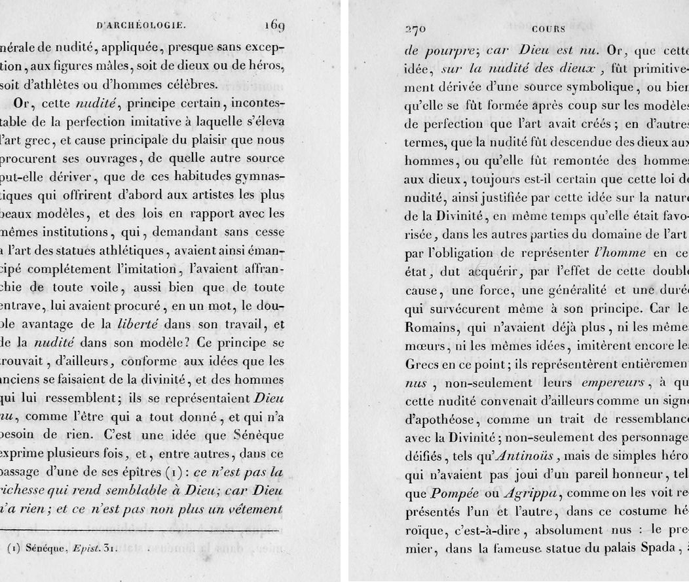

“Dieu est nu”: the law of nudity (pp. 268–270)
French: Paris 1828, ninth lesson, pp. 268–270, scans n273–n275. Highlighted: what Lecky draws on.

So all the gods, of whatever rank, all the demigods or genii, all the heroes, the athletes, the famous men of every condition, were represented entirely naked, or with some insignificant piece of clothing. There was hardly any exception to this general principle except the goddesses, who were always shown clothed, apart from Venus …
Now this nudity, the certain and incontestable principle of the imitative perfection to which Greek art rose … from what other source could it come than from those habits of the gymnasium that first offered artists the finest models, and from the laws connected with the same institutions, which, constantly demanding athletic statues from art, had thus completely emancipated imitation, freed it from every veil as from every fetter … This principle agreed, moreover, with the ideas the ancients had of the deity, and of the men who resemble it: they pictured God naked, as the being who has given everything and needs nothing. It is an idea Seneca expresses several times, among others in this passage of one of his letters: it is not riches that make one like God, for God has nothing; nor is it a purple robe, for God is naked. …
For the Romans, who no longer had the same customs or the same ideas, still imitated the Greeks on this point: they represented entirely naked not only their emperors, to whom this nudity was in any case fitting as a sign of apotheosis, as a mark of resemblance to the Divinity; not only deified persons such as Antinous, but mere heroes who had not enjoyed such an honour, such as Pompey or Agrippa …
Original French
Ainsi tous les dieux, de quelque ordre qu’ils fussent, tous les demi-dieux ou génies, tous les héros, les athlètes, les hommes célèbres, de toute condition, étaient représentés absolument nus, ou avec une partie de vêtement insignifiante. Il n’y eut guère d’exceptions à ce principe général, que celle qui concerna les déesses, représentées toujours vêtues, si ce n’est Vénus …
Or, cette nudité, principe certain, incontestable de la perfection imitative à laquelle s’éleva l’art grec … de quelle autre source put-elle dériver, que de ces habitudes gymnastiques qui offrirent d’abord aux artistes les plus beaux modèles, et des lois en rapport avec les mêmes institutions, qui, demandant sans cesse à l’art des statues athlétiques, avaient ainsi émancipé complètement l’imitation, l’avaient affranchie de toute voile, aussi bien que de toute entrave … Ce principe se trouvait, d’ailleurs, conforme aux idées que les anciens se faisaient de la divinité, et des hommes qui lui ressemblent; ils se représentaient Dieu nu, comme l’être qui a tout donné, et qui n’a besoin de rien. C’est une idée que Sénèque exprime plusieurs fois, et, entre autres, dans ce passage d’une de ses épîtres: ce n’est pas la richesse qui rend semblable à Dieu; car Dieu n’a rien; et ce n’est pas non plus un vêtement de pourpre; car Dieu est nu. …
Car les Romains, qui n’avaient déjà plus, ni les mêmes mœurs, ni les mêmes idées, imitèrent encore les Grecs en ce point; ils représentèrent entièrement nus, non-seulement leurs empereurs, à qui cette nudité convenait d’ailleurs comme un signe d’apothéose, comme un trait de ressemblance avec la Divinité; non-seulement des personnages déifiés, tels qu’Antinoüs, mais de simples héros qui n’avaient pas joui d’un pareil honneur, tels que Pompée ou Agrippa …
Raoul-Rochette’s footnote gives the Seneca reference as “Epist. 31”, the letter Lecky cites in note 56 (“Seneca, Ep. xxxi”). Lecky’s “the highest form of flattery” is his own gloss on “a sign of apotheosis”.
Further down the rabbit hole
Sources that Lecky cites in the notes next to the ones that cite this page.
- Didron, Iconographie chrétienneHow medieval art pictured Christ the Judge
- Vitet, Études sur l’histoire de l’artWhy the saints in Rome’s mosaics grew ugly: Lecky blames the monks, his source blames the barbarians
- Matter, Histoire critique du gnosticismeKilled for looking pale: Cathars, fasting and the eleventh-century ‘Manichaeans’
- Tertullian, De baptismoLecky’s two water passages checked against Migne
- Binsfeld, Tractatus de confessionibus maleficorum et sagarumThe suffragan bishop of Trier on why witches float, and why women fall
- Cibrario, Della economia politica del medio evoTurin, 1388: a heretic who held that the Devil made Adam and Eve, and that usury was no sin


Backlinks
Every place in Rationalism in Europe that links to this page (generated automatically when the site is built).